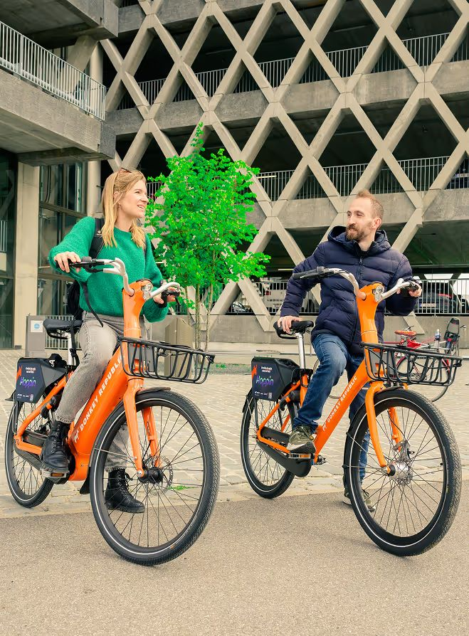

Over Ons
Wie zijn we?
MijnService Koers is ontstaan uit een diepe liefde voor de koers. Niet alleen voor het racen zelf, maar voor
alles wat erbij komt kijken: de voorbereiding, het materiaal, de spanning van een wedstrijddag, en het gevoel
na een goed gereden rit.
Wij zijn een team van ervaren mecaniciens, oud-wedstrijdrijders en gepassioneerde fietsers die jarenlang zelf
hebben ondervonden hoe belangrijk goed materiaal en ondersteuning zijn. Niet iedereen heeft toegang tot een
profteam of een voltijdse mecanicien, maar iedereen verdient het om op een perfect afgestelde fiets aan de start
te staan.
Bij ons draait het niet om een snelle beurt of een standaardservice. We luisteren, denken mee, en bieden
oplossingen op maat. Of je nu koerst in het weekend, je voorbereidt op een granfondo, of met je club op stage vertrekt: wij zorgen dat jij met vertrouwen en topmateriaal vertrekt.
Onze aanpak is persoonlijk, professioneel en volledig gericht op jouw doelen. We werken met meer dan 40
partnerwinkels in Vlaanderen, en beschikken over mobiele servicewagens, een netwerk van experts, en vooral: een
hart voor de koers. Bij ons draait het niet om verkoop, maar om ondersteuning. Geen blabla, wel goeie benen en
een fiets die klopt.
Missie
Wij geloven dat elke renner, van beginner tot elite, recht heeft op materiaal in topconditie. Of je nu solo traint voor een granfondo, deelneemt aan een ploegentijdrit of je eerste koers rijdt — wij staan aan je zijde.
Ben je benieuwd naar onze diensten of wil je samenwerken? Neem dan gerust contact met ons op.